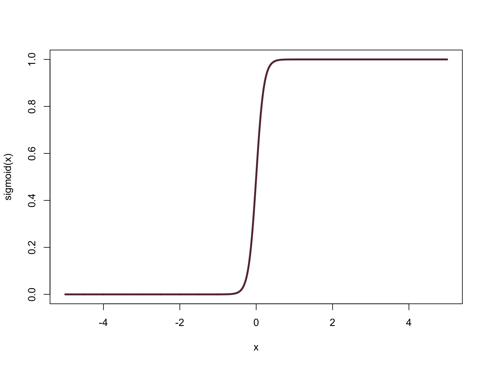
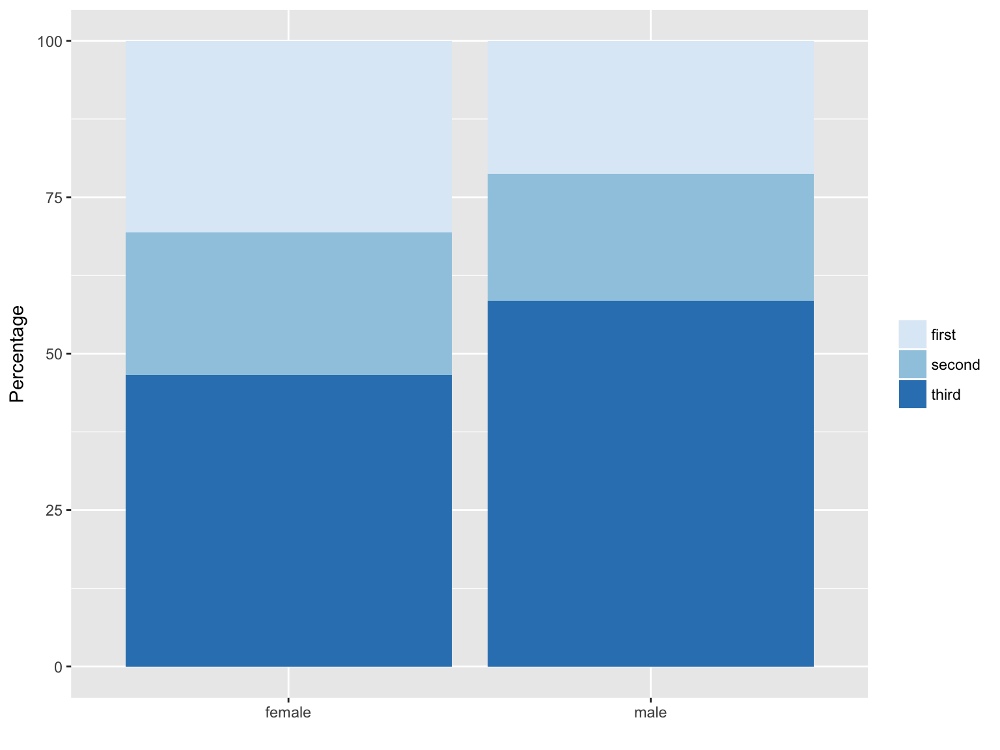

Show the data, tell what we get rid of (summarize the data, so we use the table in the proposal)

p2<-ggplot(gender.2, aes(x=gender, y=Freq, fill=passenger_class))+
geom_bar(stat = "identity")+
scale_fill_brewer("")+
#ggtitle("Passenger Class")+
xlab("")+
ylab("Percentage")
p2
# p3<-ggplot(gender.3, aes(x=gender, y=Freq, fill=number_of_siblings_and_spouses))+
# geom_bar(stat = "identity")+
# scale_fill_brewer("")+
# #ggtitle("Number of Siblings and Spouses")+
# xlab("")+
# ylab("Percentage")
#
# p4<-ggplot(gender.4, aes(x=gender, y=Freq, fill=embarked_from))+
# geom_bar(stat = "identity")+
# scale_fill_brewer("", labels=c("Cherbourg", "Queenstown", "Southampton"))+
# #ggtitle("Embarked From")+
# xlab("")+
# ylab("Percentage")
#
#
# grid.arrange(p1,p2,p3,p4)
#
#
#
# pclass<-as.data.frame(mosaic::tally(passenger_class~embarked_from, data=titanic, format="percent"))
#
# p5<-ggplot(pclass, aes(x=embarked_from, y=Freq, fill=passenger_class))+
# geom_bar(stat = "identity")+
# scale_fill_brewer("")+
# #ggtitle("Embarked From")+
# xlab("")+
# ylab("Percentage")+
# scale_x_discrete(labels=c("Cherbourg", "Queenstown", "Southampton"))-> Show the best model
-> Show the weird residual plot and explain briefly
-> Show 2 models (with and without gender) -> explain why including gender might be problematic
Interpretation of the BEST model (age, number of siblings (and spouses) and pclass)